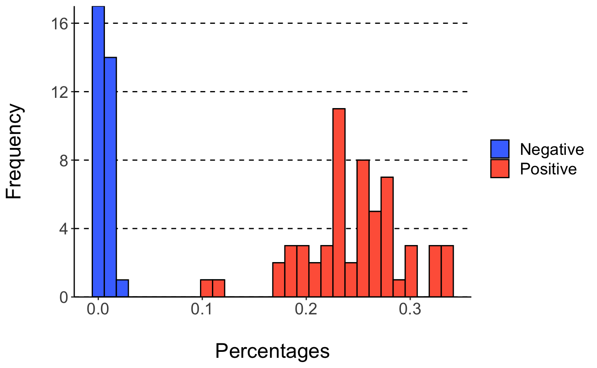

vignettes/iCAT.Rmd
iCAT.RmdiCAT aims to (1) identify TCR sequences that are significantly associated with target samples and (2) to binary-classify unkown samples. Users can either perform analysis using the Shiny graphical user interface, or directly on an R interpreter.
Graphical User Interface Workflow
In R:
library(iCAT)
iCATinteractive()This will launch a graphical user interface (GUI) for iCAT. The GUI has three tabs, separating major functionalities: training, library, and prediction.
Training:

- In the Training tab, enter your negative training samples (naïve, unexposed, uninfected, pre-infection, etc) using the
Browsebutton.
Individual samples’ sequencing data should be in .tsv format.
Repeat step 1 for positive training samples (exposed, infected, etc.)
- Choose if you want to analyze data by:
-
CDR3 Amino Acid Sequence(TCRs will need the same CDR3 region to be called ‘Identical’) -
TCRV-CDR3-TCRJ(TCRs will need the same TCRBV segment, CDR3 region, and TCRJ segment to be called ‘Identical’) Recommended -
Nucleic Acid (DNA)(TCRs will need the exact same DNA rearrangements/sequence across TCRBV, CDR3, and TCRJ)
Choose the
Max p-value, which determines the minimal degree of statistical significance that iCAT will accept as being potentially “associated” with the positive group. Defaults to p < 0.1.Choose the
Range of Acceptable Copies per Clonotype, which determines the minimum and maximum number of copies a clonotype must have to be included in the analysis. Enter as a space delimted range. Defaults to1 99. An example of when this could be useful: in case there is expected artifacts in the processing/data that overestimate the copy number of some clonotypes.Once all options are selected click
Train Model
A progress bar will show on the bottom-right corner to update on the satatus of training. After finishing, the training tab will show some exploratory tables and a figure regarding the training data and the model built, which can all be downloaded to the user’s machine. In addition, the library and prediction tab will unlock.
Library:

The Library tab displays a table consisting of the “target associated receptor sequences” (TARS), determined to be statistically associated with exposure to the target/agent/pathogen. The table displays each sequence, number of positive and negative training samples the sequence is present in/absent from, and how statistically associated the sequence is to the positive training data (p-value). The table can be downloaded to the user’s computer for further analysis using excel, commandline, etc using the download Table button below the table.
Prediction:

The Prediction tab allows the user to add sequencing data from unknown samples (e.g. not included in the previous training data) for classification as “Positive” or “Negative” and determining the accuracy of the diagnostic assay.
- Use the
Browsebutton to add samples for prediction. Multiple samples may be uploaded simultaneously. - Click
Predict Independent Sample.
A table will appear after analysis is complete. The table displays sample names along with the prediction “Positive” (red)/ “Negative” (blue), and displays the ‘%TARS’: the percent of individual sequences from the sample that are included in the TARS library. The prediction results can be downloaded as a table.
R-interface Workflow
After loading iCAT with library(iCAT)
- Define the parameters you would like to use for building the model:
library(iCAT)
## Loading required package: data.table
##
## Attaching package: 'iCAT'
## The following object is masked from 'package:grDevices':
##
## savePlot
FIELD <- "aminoAcid vGeneName jGeneName" #"aaSeqCDR3"
COUNT <- "copy"
COPY_RANGE <- "1 99"
P_CUTOFF <- 0.11
MIN_PUBLIC <- 1- Make lists of .tsv Positive and Negative training samples:
listNeg <- tsvDir("~/Downloads/iCAT Data/Negative Training Data/")
listPos <- tsvDir("~/Downloads/iCAT Data/Positive Training Data/")- optional Collect summary statistics about training samples:
trnStats(listNeg, listPos, FIELD, COUNT, COPY_RANGE)
## # Samples # Unique Sequences # Clonotypes
## Negative 32 714522 2049383
## Positive 58 573612 1581438- Read in Positive and Negative training samples:
naive <- readTrn(listNeg, FIELD, COUNT, COPY_RANGE, "naive")
vaccs <- readTrn(listPos, FIELD, COUNT, COPY_RANGE, "vacc") - Build a model using the training data:
mod <- train(naive, vaccs, listNeg, listPos, FIELD, COUNT, COPY_RANGE, P_CUTOFF, MIN_PUBLIC, NULL)- optional Produce a table estimating the classification accuracy of the model:
classMat(mod)
## Unexposed Exposed % Correct
## Negative 32 0 100
## Positive 0 58 100- optional Produce a figure showing % of TCR associated with positve samples in positive and negative samples:
plotHist(mod)
## `stat_bin()` using `bins = 30`. Pick better value with `binwidth`. - optional Produce the library of TCR sequences associated with positve samples:
getLib(mod)
## Sequence Positive Present
## 1: CASGARDNYAEQFF TCRBV13-02 TCRBJ02-01 5
## 2: CASGAYAEQFF TCRBV13-02 TCRBJ02-01 5
## 3: CASGDAGAEDTQYF TCRBV13-02 TCRBJ02-05 5
## 4: CASGDAGGTQDTQYF TCRBV13-02 TCRBJ02-05 5
## 5: CASGDAGGVSQNTLYF TCRBV13-02 TCRBJ02-04 5
## ---
## 310: CASSSTGYNNQAPLF TCRBV14-01 TCRBJ01-05 11
## 311: CTCSAEGVSNERLFF TCRBV01-01 TCRBJ01-04 11
## 312: CASSPRTGGSAETLYF TCRBV03-01 TCRBJ02-03 14
## 313: CASSRDKQDTQYF TCRBV19-01 TCRBJ02-05 13
## 314: CASSLGFYEQYF TCRBV03-01 TCRBJ02-07 14
## Positive Absent Negative Present Negative Absent P-Value
## 1: 53 0 32 0.104259211
## 2: 53 0 32 0.104259211
## 3: 53 0 32 0.104259211
## 4: 53 0 32 0.104259211
## 5: 53 0 32 0.104259211
## ---
## 310: 47 0 32 0.005472755
## 311: 47 0 32 0.005472755
## 312: 44 1 31 0.007737122
## 313: 45 0 32 0.001920171
## 314: 44 0 32 0.001122178